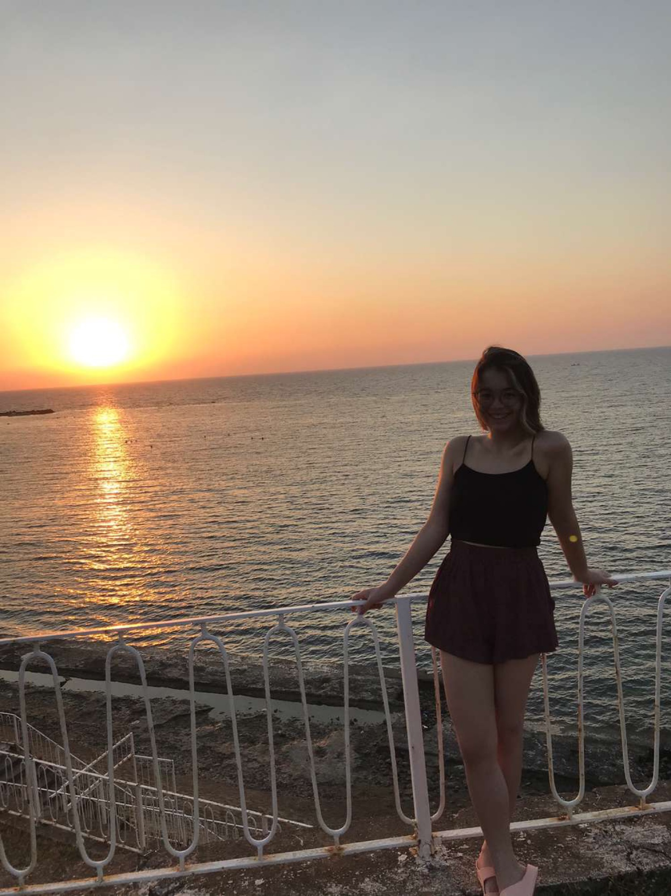

About Me
Designer & Developer

Hello! I'm İdil Kale, a passionate designer and developer with a focus on creating meaningful digital experiences. I specialize in UI/UX design, graphic design, and web development.
My work spans across various disciplines including branding, user interface design, interactive experiences, and creative coding. I believe in the power of design to solve problems and create connections between people and technology.
When I'm not designing or coding, you can find me exploring new creative tools, experimenting with different art forms, or working on personal projects that push the boundaries of digital creativity.
Get a detailed overview of my experience, skills, and projects.
Download CV